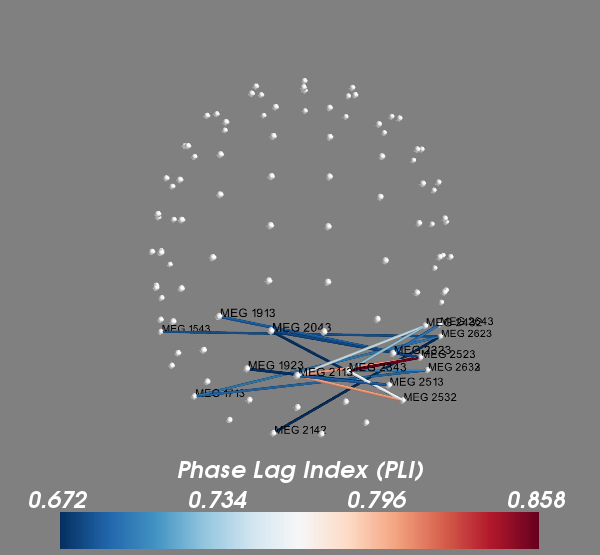

Computes the Phase Lag Index (PLI) between all gradiometers and shows the connectivity in 3D using the helmet geometry. The left visual stimulation data are used which produces strong connectvitiy in the right occipital sensors.
Python source code: plot_sensor_connectivity.py
# Author: Martin Luessi <mluessi@nmr.mgh.harvard.edu>
#
# License: BSD (3-clause)
import numpy as np
from scipy import linalg
import mne
from mne import io
from mne.connectivity import spectral_connectivity
from mne.datasets import sample
print(__doc__)
###############################################################################
# Set parameters
data_path = sample.data_path()
raw_fname = data_path + '/MEG/sample/sample_audvis_filt-0-40_raw.fif'
event_fname = data_path + '/MEG/sample/sample_audvis_filt-0-40_raw-eve.fif'
# Setup for reading the raw data
raw = io.Raw(raw_fname)
events = mne.read_events(event_fname)
# Add a bad channel
raw.info['bads'] += ['MEG 2443']
# Pick MEG gradiometers
picks = mne.pick_types(raw.info, meg='grad', eeg=False, stim=False, eog=True,
exclude='bads')
# Create epochs for the visual condition
event_id, tmin, tmax = 3, -0.2, 0.5
epochs = mne.Epochs(raw, events, event_id, tmin, tmax, picks=picks,
baseline=(None, 0), reject=dict(grad=4000e-13, eog=150e-6))
# Compute connectivity for band containing the evoked response.
# We exclude the baseline period
fmin, fmax = 3., 9.
sfreq = raw.info['sfreq'] # the sampling frequency
tmin = 0.0 # exclude the baseline period
con, freqs, times, n_epochs, n_tapers = spectral_connectivity(
epochs, method='pli', mode='multitaper', sfreq=sfreq, fmin=fmin, fmax=fmax,
faverage=True, tmin=tmin, mt_adaptive=False, n_jobs=2)
# the epochs contain an EOG channel, which we remove now
ch_names = epochs.ch_names
idx = [ch_names.index(name) for name in ch_names if name.startswith('MEG')]
con = con[idx][:, idx]
# con is a 3D array where the last dimension is size one since we averaged
# over frequencies in a single band. Here we make it 2D
con = con[:, :, 0]
# Now, visualize the connectivity in 3D
from mayavi import mlab # noqa
mlab.figure(size=(600, 600), bgcolor=(0.5, 0.5, 0.5))
# Plot the sensor locations
sens_loc = [raw.info['chs'][picks[i]]['loc'][:3] for i in idx]
sens_loc = np.array(sens_loc)
pts = mlab.points3d(sens_loc[:, 0], sens_loc[:, 1], sens_loc[:, 2],
color=(1, 1, 1), opacity=1, scale_factor=0.005)
# Get the strongest connections
n_con = 20 # show up to 20 connections
min_dist = 0.05 # exclude sensors that are less than 5cm apart
threshold = np.sort(con, axis=None)[-n_con]
ii, jj = np.where(con >= threshold)
# Remove close connections
con_nodes = list()
con_val = list()
for i, j in zip(ii, jj):
if linalg.norm(sens_loc[i] - sens_loc[j]) > min_dist:
con_nodes.append((i, j))
con_val.append(con[i, j])
con_val = np.array(con_val)
# Show the connections as tubes between sensors
vmax = np.max(con_val)
vmin = np.min(con_val)
for val, nodes in zip(con_val, con_nodes):
x1, y1, z1 = sens_loc[nodes[0]]
x2, y2, z2 = sens_loc[nodes[1]]
points = mlab.plot3d([x1, x2], [y1, y2], [z1, z2], [val, val],
vmin=vmin, vmax=vmax, tube_radius=0.001,
colormap='RdBu')
points.module_manager.scalar_lut_manager.reverse_lut = True
mlab.scalarbar(title='Phase Lag Index (PLI)', nb_labels=4)
# Add the sensor names for the connections shown
nodes_shown = list(set([n[0] for n in con_nodes] +
[n[1] for n in con_nodes]))
for node in nodes_shown:
x, y, z = sens_loc[node]
mlab.text3d(x, y, z, raw.ch_names[picks[node]], scale=0.005,
color=(0, 0, 0))
view = (-88.7, 40.8, 0.76, np.array([-3.9e-4, -8.5e-3, -1e-2]))
mlab.view(*view)
Total running time of the example: 15 seconds